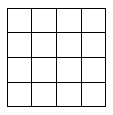

There are 40 identical cords. If you set any cord on fire on one side, it burns, and if you set it alight on the other side, it will not burn. Ahmed arranges the cords in the form of a square $($see the figure below, each cord makes up a side of a cell$)$. Then, Helen arranges 12 fuses. Will Ahmed be able to lay out the cords in such a way that Helen will not be able to burn all of them?
Let's think of situation where 12 fuses are not enough. We can assume that Ahmed is allowed to install fuses only at the ends of the cords. After all, if you transfer the fuse from the inner point of the cord to the end from which it burns, the situation will not change.
On each cord, there is an arrow in the direction in which it will burn. Let’s paint the knots of the cords in a chequered pattern. There will be 13 knots of one colour, let’s say, black. Let’s assume that all of the arrows come from these black knots $($see the figure$)$. Then each of the cords originating from a black point can only burn if a fuse is placed at this point. But we only have 12 fuses and there are 13 points.
Yes, Ahmed will be able to arrange the cords in such a way that Helen will not be able to burn all of them.